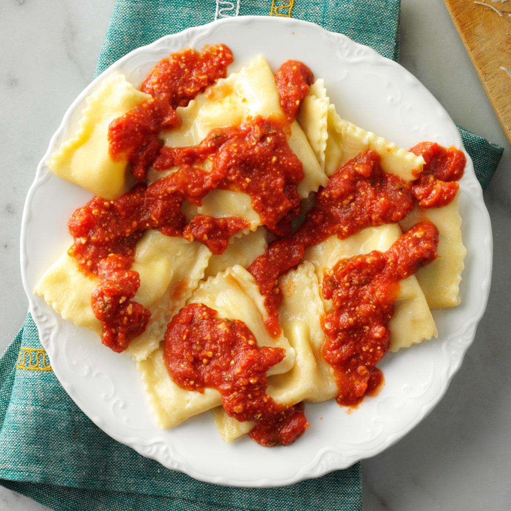

Air Fryer Ravioli

Description
A quick ravioli recipe, fit for a quick afternoon snack
Can be completed in around 20 minutes
Ingredients
- 1 large egg
- 1 tablespoon water
- 1/4 cup Italian style bread crumbs
- 1/4 cup freshly grated Pecorino Romano cheese
- 9 oz package refrigerated spinach and mozzarella ravioli
- olive oil cooking spray
- 1 cup marinara sauce, heated
Steps
- Preheat air fryer to 350 degrees
- Beat egg and water together in a small bowl. Combine bread crumbs and Pecorino Romano cheese on a plate. Dip 1 ravioli into beaten egg mixture, then into bread crumb mixture, pressing to coat. Place ravioli on a plate and repeat with remaining ravioli. Lightly spray ravioli with cooking spray.
- Place as many ravioli in the air fryer basket as you can without overlapping them.
- Cook in the preheated air fryer for 6 minutes. Flip ravioli using tongs and cook for 4 minutes more. Remove from the air fryer and repeat with remaining ravioli. Serve with your favorite marinara sauce for dipping.
Back to main page